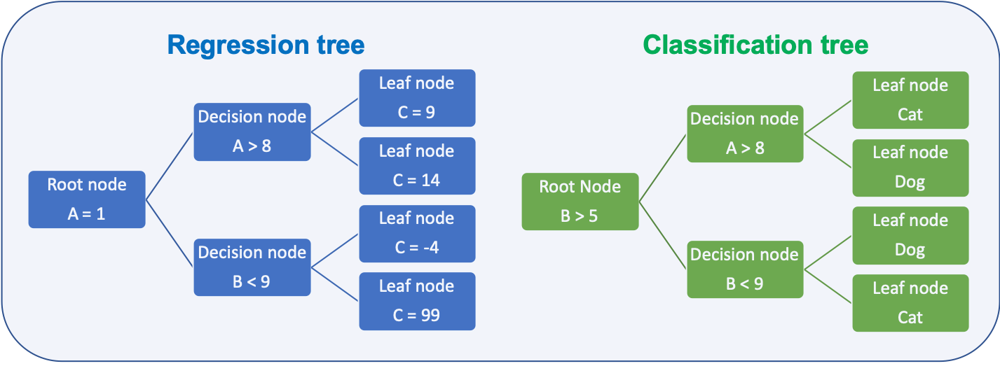
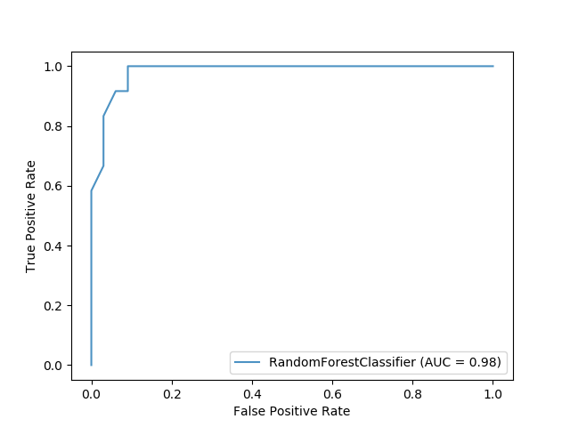
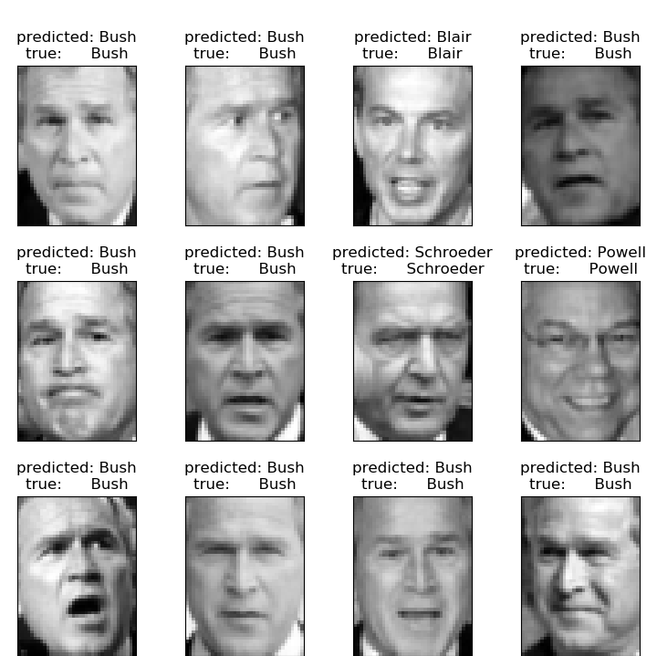

Chapter 7 ML algorithms
A comparison of a several classifiers in scikit-learn on synthetic datasets. The point of this example is to illustrate the nature of decision boundaries of different classifiers. This should be taken with a grain of salt, as the intuition conveyed by these examples does not necessarily carry over to real datasets.
Particularly in high-dimensional spaces, data can more easily be separated linearly and the simplicity of classifiers such as naive Bayes and linear SVMs might lead to better generalization than is achieved by other classifiers.
The plots show training points in solid colors and testing points semi-transparent. The lower right shows the classification accuracy on the test set.
https://scikit-learn.org/stable/auto_examples/classification/plot_classifier_comparison.html#sphx-glr-auto-examples-classification-plot-classifier-comparison-py
7.1 Linear regression TBD
A linear regression is a regression analysis, a statistical method, at which a dependent variable is explained through several independent variables.
- Simple linear regression
- Only one independent variable
- Multiple linear regression
- more than one independent variables
Linear regression algorithm is one of the fundamental supervised learning algorithms.
7.1.1 Example for linear regression
In this example the procedure of a linear regression is described
Data
Given is a set of data created by a linear expression plus some noise
\[y = 3*x+2+n\] where \(n\) is noise
The data can be depicted as below. It is easy to be seen that we are looking at a linear function with superimposed noise.

Model
The task is to find the value for \(w_0\) and \(w_1\) of a model which is as close as possible to the original function
\[\hat{y} = w_0*x+w_1\]
Loss function
The metric to define how good the model fits the data is defined as mean squared error (MSE)
\[L=(\hat{y}-y)^2\]
Minimise loss function
The difference between \(\hat{y}\) and \(y\) shall be small stochastic gradient descent (SGD) can be applied.
SGD:
- Iteratively updating values of \(w_0, w_1\) using
- gradient
- learning rate \(\eta\)
In maths terms this can be written as:
A graphical representation of SGD is given below. In this example the loss function can be depicted as a 3D plot. In the current case the surface is flat which makes it easy to find the global optimum

Figure from https://nbviewer.jupyter.org/gist/joshfp/85d96f07aaa5f4d2c9eb47956ccdcc88/lesson2-sgd-in-action.ipynb
7.2 Logistic regression
Logistic regression is similar to linear regression, however, the value range of the dependent variable y is limited to:
\[0\leq y \geq 1\]
Logistic regression is a algorithm with the low computational complexity TBD
- Low computational complexity
- y limited range of values \(0\leq y \geq 1\)
- maps x on y (\(y \leftarrow x\)) using the logisit function
- Used of classification
The logistic function is depicted in the graph below

The logistic function is defined as:
Logistic function: \[logistic(\eta) = \frac{1}{1+exp^{-\eta}}\]
\[P(Y = 1 \vert X_i = x_i) = \frac{1}{1+exp^{-(\beta_0 + \beta_1X_1+ \dots \beta_n X_n)}}\]
where:
- \(\beta_n\) are the coeffcients we are searching
- \(X_n\) are the features
The second equation reads: The probability of \(Y=1\) given the value \(X=x_i\) which is exactly the result needed for a classification problem.
7.2.1 Python example logistic regression
An example of scikit-learn is given at https://scikit-learn.org/stable/auto_examples/linear_model/plot_logistic.html#sphx-glr-auto-examples-linear-model-plot-logistic-py and emphasises on the difference between linear and logistic regression. The synthetic data set has values either 0 or 1. This can be modeled quite well with logisitc regression, but not at all with linear regression.

The python code is given below
import numpy as np
import matplotlib.pyplot as plt
from sklearn import linear_model
from scipy.special import expit
# General a toy dataset:s it's just a straight line with some Gaussian noise:
xmin, xmax = -5, 5
n_samples = 100
np.random.seed(0)
X = np.random.normal(size=n_samples)
y = (X > 0).astype(np.float)
X[X > 0] *= 4
X += .3 * np.random.normal(size=n_samples)
X = X[:, np.newaxis]
# Fit the classifier
clf = linear_model.LogisticRegression(C=1e5)
clf.fit(X, y)
# and plot the result
plt.figure(1, figsize=(4, 3))
plt.clf()
plt.scatter(X.ravel(), y, color='black', zorder=20)
X_test = np.linspace(-5, 10, 300)
loss = expit(X_test * clf.coef_ + clf.intercept_).ravel()
plt.plot(X_test, loss, color='red', linewidth=3)
ols = linear_model.LinearRegression()
ols.fit(X, y)
plt.plot(X_test, ols.coef_ * X_test + ols.intercept_, linewidth=1)
plt.axhline(.5, color='.5')
plt.ylabel('y')
plt.xlabel('X')
plt.xticks(range(-5, 10))
plt.yticks([0, 0.5, 1])
plt.ylim(-.25, 1.25)
plt.xlim(-4, 10)
plt.legend(('Logistic Regression Model', 'Linear Regression Model'),
loc="lower right", fontsize='small')
plt.tight_layout()
plt.show()7.3 Tree based methods TBD
Tree based methods can be used for different predictions:
Types of predictions:
- Regression trees
- predict quantitative response
- Classification trees
- predict qualitative response

Depending on the task the metric to decide how to split the data is different:
Metric for splits:
- Regression
- Residual sum of squares (RSS)
- Goal is to minimize the value
- Classification
- Gini index
- Cross entropy
- Both metrics are numerically very similar
- Goal is to minimize the value
7.3.1 Splitting metrics
Deciding how to split the data at a node is done based on metrics which shall be minimal for the split
Residual sum of squares (RSS):
- Regression trees
- How close are the samples to the mean of all samples in the resulting node
- \(RSS = \sum_{k=1}^{K}\sum_{biR_j}(y_i-\hat{y}_{Rj})^2\)
Gini index:
- Classification
- How pure is are the resulting leafs
- \(G = \sum_{k=1}^{K}p_i(1-p_i)\)
Cross-entropy:
How pure is are the resulting leafs
\(D = - \sum_{k=1}^{K}p_i \log_{10}(p_i)\)
An example on how the gini value changes

# source: https://scikit-learn.org/stable/auto_examples/tree/plot_iris_dtc.html#sphx-glr-auto-examples-tree-plot-iris-dtc-py
import numpy as np
import matplotlib.pyplot as plt
from sklearn.datasets import load_iris
from sklearn.tree import DecisionTreeClassifier, plot_tree
# Parameters
n_classes = 3
plot_colors = "ryb"
plot_step = 0.02
# Load data
iris = load_iris()
for pairidx, pair in enumerate([[0, 1], [0, 2], [0, 3],
[1, 2], [1, 3], [2, 3]]):
# We only take the two corresponding features
X = iris.data[:, pair]
y = iris.target
# Train
clf = DecisionTreeClassifier().fit(X, y)
# Plot the decision boundary
plt.subplot(2, 3, pairidx + 1)
x_min, x_max = X[:, 0].min() - 1, X[:, 0].max() + 1
y_min, y_max = X[:, 1].min() - 1, X[:, 1].max() + 1
xx, yy = np.meshgrid(np.arange(x_min, x_max, plot_step),
np.arange(y_min, y_max, plot_step))
plt.tight_layout(h_pad=0.5, w_pad=0.5, pad=2.5)
Z = clf.predict(np.c_[xx.ravel(), yy.ravel()])
Z = Z.reshape(xx.shape)
cs = plt.contourf(xx, yy, Z, cmap=plt.cm.RdYlBu)
plt.xlabel(iris.feature_names[pair[0]])
plt.ylabel(iris.feature_names[pair[1]])
# Plot the training points
for i, color in zip(range(n_classes), plot_colors):
idx = np.where(y == i)
plt.scatter(X[idx, 0], X[idx, 1], c=color, label=iris.target_names[i],
cmap=plt.cm.RdYlBu, edgecolor='black', s=15)
plt.suptitle("Decision surface of a decision tree using paired features")
plt.legend(loc='lower right', borderpad=0, handletextpad=0)
plt.axis("tight")
plt.figure(dpi = 300) # Uwe Sterr added dpi argument for better readability of plot
clf = DecisionTreeClassifier().fit(iris.data, iris.target)
plot_tree(clf, filled=True)
plt.show()7.3.2 Ensembles
Prediction ability of a single decision tree is limited, several techniques are employed to enhance the ability. All of them are aimed at buidling a ensemble of trees which combined have a higher prediction ability than a single tree.
Ensembling methods:
7.3.2.1 Bootstrap
Bootstrapping is resembling method that relies on sampling with replacement as shown in the image below

Bootstrap is a widely applicable and extremely powerful statistical tool that allow assigning measures of accuracy associated with a given estimator or statistical learning method.
It is used by the random forest algorithm as described in chapter 7.3.3
7.3.2.2 Bagging
Bagging is short for bootstrap and aggregation and is a general purpose procedure for reducing the variance of a machine learning algorithm. It is particularly useful and frequently used in the context of decision trees.
For random forests the method works as follows:
Bootstrapping for random forest:
- Generate training data by bootstrapping from the original training data set
- Generate a tree
- Repeat this M times
- Predict by averaging the predictions of all trees
7.3.2.3 Boosting
Boosting can be utilized for regression and classification problems. It produces an ensemble of weak learners, typically decision trees. The models are build sequentially allowing optimization of an arbitrary differentiable loss function. An example on how boosting works for tree is given in chapter 7.3.4

7.3.3 Random forest TBD
Random forest has its name from the randomly selected predictors at each split. The Algorithm is described in (Kuhn and Johnson 2013) p.200:
Random forest algorithm:
- Select number of models to build m
- for each model
- generate bootstrap sample of the original data
- train a tree model for this sample
- at each split
- select randomly k of the original predictors
- select best predictor
- partition the data
- until model stop criteria is meet
- average prediction of all trees for new samples
The algorithm can be depicted as below

Random forests have weaknesses and strengths
Pros and cons of random forest:
- Pro
- Handle higher dimensionality data very well
- Handles missing values well
- Cons
- Due to aggregation of all trees no precise values for regression
7.3.3.1 Python example for random forest
The sample code for a random forest classifier produces a ROC image as shown below

import matplotlib.pyplot as plt
from sklearn.ensemble import RandomForestClassifier
from sklearn.metrics import plot_roc_curve
from sklearn.datasets import load_wine
from sklearn.model_selection import train_test_split
X, y = load_wine(return_X_y=True)
y = y == 2
X_train, X_test, y_train, y_test = train_test_split(X, y, random_state=42)
rfc = RandomForestClassifier(n_estimators=10, random_state=42)
rfc.fit(X_train, y_train)
ax = plt.gca()
rfc_disp = plot_roc_curve(rfc, X_test, y_test, ax=ax, alpha=0.8)
plt.show()7.3.3.2 Parameters for random forest
The parameters are from the scikit-learn webpage https://scikit-learn.org/stable/modules/generated/sklearn.ensemble.RandomForestClassifier.html#sklearn.ensemble.RandomForestClassifier
- n_estimatorsinteger, optional (default=100)
-
The number of trees in the forest.
Changed in version 0.22: The default value of
n_estimatorschanged from 10 to 100 in 0.22. - criterionstring, optional (default=gini)
-
The function to measure the quality of a split. Supported criteria are gini for the Gini impurity and entropy for the information gain. Note: this parameter is tree-specific.
- max_depthinteger or None, optional (default=None)
-
The maximum depth of the tree. If None, then nodes are expanded until all leaves are pure or until all leaves contain less than min_samples_split samples.
- min_samples_splitint, float, optional (default=2)
-
The minimum number of samples required to split an internal node:
-
If int, then consider
min_samples_splitas the minimum number. -
If float, then
min_samples_splitis a fraction andceil(min_samples_split * n_samples)are the minimum number of samples for each split.
Changed in version 0.18: Added float values for fractions.
-
- min_samples_leafint, float, optional (default=1)
-
The minimum number of samples required to be at a leaf node. A split point at any depth will only be considered if it leaves at least
min_samples_leaftraining samples in each of the left and right branches. This may have the effect of smoothing the model, especially in regression.-
If int, then consider
min_samples_leafas the minimum number. -
If float, then
min_samples_leafis a fraction andceil(min_samples_leaf * n_samples)are the minimum number of samples for each node.
Changed in version 0.18: Added float values for fractions.
-
- min_weight_fraction_leaffloat, optional (default=0.)
-
The minimum weighted fraction of the sum total of weights (of all the input samples) required to be at a leaf node. Samples have equal weight when sample_weight is not provided.
- max_featuresint, float, string or None, optional (default=auto)
-
The number of features to consider when looking for the best split:
-
If int, then consider
max_featuresfeatures at each split. -
If float, then
max_featuresis a fraction andint(max_features * n_features)features are considered at each split. -
If auto, then
max_features=sqrt(n_features). -
If sqrt, then
max_features=sqrt(n_features)(same as auto). -
If log2, then
max_features=log2(n_features). -
If None, then
max_features=n_features.
Note: the search for a split does not stop until at least one valid partition of the node samples is found, even if it requires to effectively inspect more than
max_featuresfeatures. -
- max_leaf_nodesint or None, optional (default=None)
-
Grow trees with
max_leaf_nodesin best-first fashion. Best nodes are defined as relative reduction in impurity. If None then unlimited number of leaf nodes. - min_impurity_decreasefloat, optional (default=0.)
-
A node will be split if this split induces a decrease of the impurity greater than or equal to this value.
The weighted impurity decrease equation is the following:
N_t / N * (impurity - N_t_R / N_t * right_impurity - N_t_L / N_t * left_impurity)
where
Nis the total number of samples,N_tis the number of samples at the current node,N_t_Lis the number of samples in the left child, andN_t_Ris the number of samples in the right child.N,N_t,N_t_RandN_t_Lall refer to the weighted sum, ifsample_weightis passed.New in version 0.19.
- min_impurity_splitfloat, (default=1e-7)
-
Threshold for early stopping in tree growth. A node will split if its impurity is above the threshold, otherwise it is a leaf.
Deprecated since version 0.19:
min_impurity_splithas been deprecated in favor ofmin_impurity_decreasein 0.19. The default value ofmin_impurity_splitwill change from 1e-7 to 0 in 0.23 and it will be removed in 0.25. Usemin_impurity_decreaseinstead. - bootstrapboolean, optional (default=True)
-
Whether bootstrap samples are used when building trees. If False, the whole datset is used to build each tree.
- oob_scorebool (default=False)
-
Whether to use out-of-bag samples to estimate the generalization accuracy.
- n_jobsint or None, optional (default=None)
-
The number of jobs to run in parallel.
fit,predict,decision_pathandapplyare all parallelized over the trees.Nonemeans 1 unless in ajoblib.parallel_backendcontext.-1means using all processors. See Glossary for more details. - random_stateint, RandomState instance or None, optional (default=None)
-
Controls both the randomness of the bootstrapping of the samples used when building trees (if
bootstrap=True) and the sampling of the features to consider when looking for the best split at each node (ifmax_features < n_features). See Glossary for details. - verboseint, optional (default=0)
-
Controls the verbosity when fitting and predicting.
- warm_startbool, optional (default=False)
-
When set to
True, reuse the solution of the previous call to fit and add more estimators to the ensemble, otherwise, just fit a whole new forest. See the Glossary. - class_weightdict, list of dicts, balanced, balanced_subsample or None, optional (default=None)
-
Weights associated with classes in the form
{class_label: weight}. If not given, all classes are supposed to have weight one. For multi-output problems, a list of dicts can be provided in the same order as the columns of y.Note that for multioutput (including multilabel) weights should be defined for each class of every column in its own dict. For example, for four-class multilabel classification weights should be [{0: 1, 1: 1}, {0: 1, 1: 5}, {0: 1, 1: 1}, {0: 1, 1: 1}] instead of [{1:1}, {2:5}, {3:1}, {4:1}].
The balanced mode uses the values of y to automatically adjust weights inversely proportional to class frequencies in the input data as
n_samples / (n_classes * np.bincount(y))The balanced_subsample mode is the same as balanced except that weights are computed based on the bootstrap sample for every tree grown.
For multi-output, the weights of each column of y will be multiplied.
Note that these weights will be multiplied with sample_weight (passed through the fit method) if sample_weight is specified.
- ccp_alphanon-negative float, optional (default=0.0)
-
Complexity parameter used for Minimal Cost-Complexity Pruning. The subtree with the largest cost complexity that is smaller than
ccp_alphawill be chosen. By default, no pruning is performed. See Minimal Cost-Complexity Pruning for details.New in version 0.22.
- max_samplesint or float, default=None
-
If bootstrap is True, the number of samples to draw from X to train each base estimator.
-
If None (default), then draw
X.shape[0]samples. -
If int, then draw
max_samplessamples. -
If float, then draw
max_samples * X.shape[0]samples. Thus,max_samplesshould be in the interval(0, 1).
New in version 0.22.
-
7.3.4 Boosted trees TBD
Boosted trees are an ensemble of weak learners where each learner is build on the knowledge gained by all previous learners.
The following image depicts the algorithm which can be summarized:
Boosted tree algorithm
- Generate small tree
- Calculate residuals for all samples
- Use residuals to generate next tree
- Combine all trees to build new model
- Repeat from step 1.
The algorithm is depicted below

Figure based on (Zhang et al. 2018), added explanation at the right hand side
Boosted trees have weaknesses and strengths
Pros and cons of boosted trees:
- Pro
- Supports different loss functions
- Cons
- Prone to overfitting
- Carefully tuning of hyperparameters is required
The algorithm of boosted trees for regression is described in a rather mathematically way in (James et al. 2013) p.323:
- Set \(\hat{f} = 0\) and \(r_i = y_i\) for all \(i\) in the training set
- For \(b=1,2,\dots,B\) repeat:
- Fit a tree \(\hat{f}^b\) with \(d\) splits (\(d+1\) terminal nodes) to the training data \((X,r)\)
- Update \(\hat{f}\) by adding in a shrunken version of the new tree \(\hat{f}(x) \leftarrow \hat{f}(x) + \lambda \hat{f}^b(x)\)
- Update the residuals \(r_i \leftarrow r_i + \lambda \hat{f}^b(x_i)\)
- Output the boosted model \(\hat{f}(x) = \sum_{b=1}^{B}\lambda \hat{f}^b(x)\)
Another introduction to boosted trees is given at the XGBoost Documentation with a thorough mathematical explanation of the approach.
7.3.4.1 Python examples for boosted trees
A popular library for boosted trees in Python is XGBoost, the documentation is hosted at https://xgboost.readthedocs.io/en/latest/.
Plenty of examples are on the GitHub page https://github.com/dmlc/xgboost/tree/master/demo/guide-python.
The example script basic_walkthrough.py is shown below
#!/usr/bin/python
import numpy as np
import scipy.sparse
import pickle
import xgboost as xgb
### simple example
# load file from text file, also binary buffer generated by xgboost
dtrain = xgb.DMatrix('../data/agaricus.txt.train')
dtest = xgb.DMatrix('../data/agaricus.txt.test')
# specify parameters via map, definition are same as c++ version
param = {'max_depth':2, 'eta':1, 'silent':1, 'objective':'binary:logistic'}
# specify validations set to watch performance
watchlist = [(dtest, 'eval'), (dtrain, 'train')]
num_round = 2
bst = xgb.train(param, dtrain, num_round, watchlist)
# this is prediction
preds = bst.predict(dtest)
labels = dtest.get_label()
print('error=%f' % (sum(1 for i in range(len(preds)) if int(preds[i] > 0.5) != labels[i]) / float(len(preds))))
bst.save_model('0001.model')
# dump model
bst.dump_model('dump.raw.txt')
# dump model with feature map
bst.dump_model('dump.nice.txt', '../data/featmap.txt')
# save dmatrix into binary buffer
dtest.save_binary('dtest.buffer')
# save model
bst.save_model('xgb.model')
# load model and data in
bst2 = xgb.Booster(model_file='xgb.model')
dtest2 = xgb.DMatrix('dtest.buffer')
preds2 = bst2.predict(dtest2)
# assert they are the same
assert np.sum(np.abs(preds2 - preds)) == 0
# alternatively, you can pickle the booster
pks = pickle.dumps(bst2)
# load model and data in
bst3 = pickle.loads(pks)
preds3 = bst3.predict(dtest2)
# assert they are the same
assert np.sum(np.abs(preds3 - preds)) == 0
###
# build dmatrix from scipy.sparse
print('start running example of build DMatrix from scipy.sparse CSR Matrix')
labels = []
row = []; col = []; dat = []
i = 0
for l in open('../data/agaricus.txt.train'):
arr = l.split()
labels.append(int(arr[0]))
for it in arr[1:]:
k,v = it.split(':')
row.append(i); col.append(int(k)); dat.append(float(v))
i += 1
csr = scipy.sparse.csr_matrix((dat, (row, col)))
dtrain = xgb.DMatrix(csr, label=labels)
watchlist = [(dtest, 'eval'), (dtrain, 'train')]
bst = xgb.train(param, dtrain, num_round, watchlist)
print('start running example of build DMatrix from scipy.sparse CSC Matrix')
# we can also construct from csc matrix
csc = scipy.sparse.csc_matrix((dat, (row, col)))
dtrain = xgb.DMatrix(csc, label=labels)
watchlist = [(dtest, 'eval'), (dtrain, 'train')]
bst = xgb.train(param, dtrain, num_round, watchlist)
print('start running example of build DMatrix from numpy array')
# NOTE: npymat is numpy array, we will convert it into scipy.sparse.csr_matrix in internal implementation
# then convert to DMatrix
npymat = csr.todense()
dtrain = xgb.DMatrix(npymat, label=labels)
watchlist = [(dtest, 'eval'), (dtrain, 'train')]
bst = xgb.train(param, dtrain, num_round, watchlist)The parameters below are from their webpage https://xgboost.readthedocs.io/en/latest/parameter.html#learning-task-parameters
Learning Task Parameters¶
Specify the learning task and the corresponding learning objective. The objective options are below:
-
objective[default=reg:squarederror]-
reg:squarederror: regression with squared loss. -
reg:squaredlogerror: regression with squared log loss . All input labels are required to be greater than -1. Also, see metricrmslefor possible issue with this objective. -
reg:logistic: logistic regression -
binary:logistic: logistic regression for binary classification, output probability -
binary:logitraw: logistic regression for binary classification, output score before logistic transformation -
binary:hinge: hinge loss for binary classification. This makes predictions of 0 or 1, rather than producing probabilities. -
count:poissonpoisson regression for count data, output mean of poisson distribution-
max_delta_stepis set to 0.7 by default in poisson regression (used to safeguard optimization)
-
-
survival:cox: Cox regression for right censored survival time data (negative values are considered right censored). Note that predictions are returned on the hazard ratio scale (i.e., as HR = exp(marginal_prediction) in the proportional hazard functionh(t) = h0(t) * HR). -
multi:softmax: set XGBoost to do multiclass classification using the softmax objective, you also need to set num_class(number of classes) -
multi:softprob: same as softmax, but output a vector ofndata nclass, which can be further reshaped tondata nclassmatrix. The result contains predicted probability of each data point belonging to each class. -
rank:pairwise: Use LambdaMART to perform pairwise ranking where the pairwise loss is minimized -
rank:ndcg: Use LambdaMART to perform list-wise ranking where Normalized Discounted Cumulative Gain (NDCG) is maximized -
rank:map: Use LambdaMART to perform list-wise ranking where Mean Average Precision (MAP) is maximized -
reg:gamma: gamma regression with log-link. Output is a mean of gamma distribution. It might be useful, e.g., for modeling insurance claims severity, or for any outcome that might be gamma-distributed. -
reg:tweedie: Tweedie regression with log-link. It might be useful, e.g., for modeling total loss in insurance, or for any outcome that might be Tweedie-distributed.
-
-
base_score[default=0.5]-
The initial prediction score of all instances, global bias
-
For sufficient number of iterations, changing this value will not have too much effect.
-
-
eval_metric[default according to objective]-
Evaluation metrics for validation data, a default metric will be assigned according to objective (rmse for regression, and error for classification, mean average precision for ranking)
-
User can add multiple evaluation metrics. Python users: remember to pass the metrics in as list of parameters pairs instead of map, so that latter
eval_metricwont override previous one -
The choices are listed below:
-
rmse: root mean square error -
rmsle: root mean square log error: . Default metric ofreg:squaredlogerrorobjective. This metric reduces errors generated by outliers in dataset. But becauselogfunction is employed,rmslemight outputnanwhen prediction value is less than -1. Seereg:squaredlogerrorfor other requirements. -
mae: mean absolute error -
logloss: negative log-likelihood -
error: Binary classification error rate. It is calculated as#(wrong cases)/#(all cases). For the predictions, the evaluation will regard the instances with prediction value larger than 0.5 as positive instances, and the others as negative instances. -
error@t: a different than 0.5 binary classification threshold value could be specified by providing a numerical value through t. -
merror: Multiclass classification error rate. It is calculated as#(wrong cases)/#(all cases). -
mlogloss: Multiclass logloss. -
auc: Area under the curve -
aucpr: Area under the PR curve -
ndcg@n,map@n: n can be assigned as an integer to cut off the top positions in the lists for evaluation. -
ndcg-,map-,ndcg@n-,map@n-: In XGBoost, NDCG and MAP will evaluate the score of a list without any positive samples as 1. By adding - in the evaluation metric XGBoost will evaluate these score as 0 to be consistent under some conditions. -
poisson-nloglik: negative log-likelihood for Poisson regression -
gamma-nloglik: negative log-likelihood for gamma regression -
cox-nloglik: negative partial log-likelihood for Cox proportional hazards regression -
gamma-deviance: residual deviance for gamma regression -
tweedie-nloglik: negative log-likelihood for Tweedie regression (at a specified value of thetweedie_variance_powerparameter)
-
-
-
seed[default=0]-
Random number seed. This parameter is ignored in R package, use set.seed() instead.
-
7.4 Support Vector Machine (SVM) TBD
A good explanation of the theory behind SVMs is given in (Tibshirani et al. 2013)
The support vector machine (SVM) is an extension of the support vector classifier that results from enlarging the feature space in a specific way, using kernels. We will now discuss this extension, the details of which are somewhat complex and are beyond the scope of this report. The main idea is to enlarge the feature space in order to accommodate a non-linear boundary between the classes. The kernel approach that we describe here is simply an efficient computational approach for enacting this idea.
The solution to the support vector classifier problem involves only the inner products of the observations (as opposed to the observations themselves). The inner product of two r-vectors a and b is defined as \(\langle a, b\rangle=\sum_{i=1}^{r} a_{i} b_{i}\);. Thus the inner product of two observations \(x_{i}, x_{i^{\prime}}\) is given by
\[\begin{equation} \left\langle x_{i}, x_{i^{\prime}}\right\rangle=\sum_{j=1}^{p} x_{i j} x_{i^{\prime} j} \tag{7.1} \end{equation}\]
It can be shown that
- The linear support vector classifier can be represented as:
\[\begin{equation} f(x)=\beta_{0}+\sum_{i=1}^{n} \alpha_{i}\left\langle x, x_{i}\right\rangle \tag{7.2} \end{equation}\]
where there are n parameters \(\alpha_{i}, \quad i=1, \dots, n\), one per training observation.
- To estimate the parameters \(\alpha_{1}, \ldots, \alpha_{n} \text { and } \beta_{0}\), all we need are the \(\left( \begin{array}{l}{n} \\ {2}\end{array}\right)\) inner products \(\left\langle x_{i}, x_{i^{\prime}}\right\rangle\) between all pairs of training observations. The notation \(\left( \begin{array}{c}{n} \\ {2}\end{array}\right)\) means \(n(n-1) / 2\) and gives the number of pairs among a set of \(n\) items.
Notice that in (7.2), in order to evaluate the function f(x), we need to compute the inner product between the new point x and each of the training points \(x_i\). However, it turns out that \(伪_i\) is nonzero only for the support vectors in the solutionthat is, if a training observation is not a support vector, then its \(伪_i\) equals zero. So if S is the collection of indices of these support points, we can rewrite any solution function of the form (7.2) as
\[\begin{equation} f(x)=\beta_{0}+\sum_{i \in \mathcal{S}} \alpha_{i}\left\langle x, x_{i}\right\rangle \tag{7.3} \end{equation}\] which typically involves far fewer terms than in (7.2)
7.4.1 Kernels
To summarize, in representing the linear classifier \(f (x)\), and in computing its coefficients, all we need are inner products. Now suppose that every time the inner product (7.1) appears in the representation (7.2), or in a calculation of the solution for the support vector classifier, we replace it with a generalization of the inner product of the form
\[\begin{equation} K\left(x_{i}, x_{i^{\prime}}\right) \tag{7.4} \end{equation}\]
where K is some function that we will refer to as a kernel. A kernel is a function that quantifies the similarity of two observations. For instance, we could simply take
\[\begin{equation} K\left(x_{i}, x_{i^{\prime}}\right)=\sum_{j=1}^{p} x_{i j} x_{i^{\prime} j} \tag{7.5} \end{equation}\]
which would just give us back the support vector classifier. Equation (7.5) is known as a linear kernel because the support vector classifier is linear in the features; the linear kernel essentially quantifies the similarity of a pair of observations using Pearson (standard) correlation.
7.4.1.1 Polynomial Kernel
But one could instead choose another form for (7.4). For instance, one could replace every instance of \(\sum_{j=1}^{p} x_{i j} x_{i^{\prime} j}\) with the quantity
\[\begin{equation} K\left(x_{i}, x_{i^{\prime}}\right)=\left(1+\sum_{j=1}^{p} x_{i j} x_{i^{\prime} j}\right)^{d} \tag{7.6} \end{equation}\]
This is known as a polynomial kernel of degree d, where d is a positive integer. Using such a kernel with d > 1, instead of the standard linear kernel (7.5), in the support vector classifier algorithm leads to a much more flexible decision boundary. It essentially amounts to fitting a support vector classifier in a higher-dimensional space involving polynomials of degree d, rather than in the original feature space. When the support vector classifier is combined with a non-linear kernel such as (7.6), the resulting classifier is known as a support vector machine. Note that in this case the (non-linear) function has the form
\[\begin{equation} f(x)=\beta_{0}+\sum_{i \in \mathcal{S}} \alpha_{i} K\left(x, x_{i}\right) \tag{7.7} \end{equation}\]
The polynomial kernel shown in (7.6) is one example of a possible non-linear kernel, but alternatives abound.
7.4.1.2 Radial Kernel
Another popular choice is the radial kernel, which takes the form
\[\begin{equation} K\left(x_{i}, x_{i^{\prime}}\right)=\exp \left(-\gamma \sum_{j=1}^{p}\left(x_{i j}-x_{i^{\prime} j}\right)^{2}\right) \tag{7.8} \end{equation}\]
In (7.8), γ is a positive constant.
How does the radial kernel (7.8) actually work? If a given test observation \(x^{*}=\left(x_{1}^{*} \ldots x_{p}^{*}\right)^{T}\) is far from a training observation \(x_i\) in terms of Euclidean distance, then \(\sum_{j=1}^{p}\left(x_{j}^{*}-x_{i j}\right)^{2}\) will be large, and so \(K\left(x_{i}, x_{i^{\prime}}\right)={\exp \left(-\gamma \sum_{j=1}^{p}\left(x_{j}^{*}-x_{i j}\right)^{2}\right)}\) will be very tiny. This means that in (7.7), \(x_{i}\) will play virtually no role in \(f\left(x^{*}\right)\). Recall that the predicted class label for the test observation \(x^{*}\) is based on the sign of \(f\left(x^{*}\right)\). In other words, training observations that are far from \(x^{*}\) will play essentially no role in the predicted class label for \(x^{*}\). This means that the radial kernel has very local behaviour, in the sense that only nearby training observations have an effect on the class label of a test observation. What is the advantage of using a kernel rather than simply enlarging the feature space using functions of the original features? One advantage is computational, and it amounts to the fact that using kernels, one need only compute \(K\left(x_{i}, x_{i^{\prime}}\right)\) for \(\left( \begin{array}{l}{n} \\ {2}\end{array}\right)\) distinct pairs \(i\), \(i^{\prime}\).This can be done without explicitly working in the enlarged feature space. This is im- portant because in many applications of SVMs, the enlarged feature space is so large that computations are intractable. For some kernels, such as the radial kernel (7.8), the feature space is implicit and infinite-dimensional, so we could never do the computations there anyway!
7.4.2 Python example for SVM
Two examples are given, both take images and classify them.
7.4.2.1 SVM face recognition
The following example is given at scikit-learn.org
It uses a SVM with
- rbf kernel
- grid search for hyper parameter
- C
- gamma
- using scikit-learn GridSearchCV
- PCA to create input features
- 150 dimensions
See below some examples of the resulting classification of the algorithm

Total dataset size:
n_samples: 1288
n_features: 1850
n_classes: 7
Extracting the top 150 eigenfaces from 966 faces
done in 0.320s
Projecting the input data on the eigenfaces orthonormal basis
done in 0.013s
Fitting the classifier to the training set
done in 28.379s
Best estimator found by grid search:
SVC(C=1000.0, break_ties=False, cache_size=200, class_weight='balanced',
coef0=0.0, decision_function_shape='ovr', degree=3, gamma=0.005,
kernel='rbf', max_iter=-1, probability=False, random_state=None,
shrinking=True, tol=0.001, verbose=False)
Predicting people's names on the test set
done in 0.045s
precision recall f1-score support
Ariel Sharon 0.88 0.54 0.67 13
Colin Powell 0.80 0.87 0.83 60
Donald Rumsfeld 0.94 0.63 0.76 27
George W Bush 0.83 0.98 0.90 146
Gerhard Schroeder 0.91 0.80 0.85 25
Hugo Chavez 1.00 0.53 0.70 15
Tony Blair 0.96 0.75 0.84 36
accuracy 0.85 322
macro avg 0.90 0.73 0.79 322
weighted avg 0.86 0.85 0.84 322
Confusion matrix
[[ 7 1 0 5 0 0 0]
[ 1 52 0 7 0 0 0]
[ 0 3 17 7 0 0 0]
[ 0 3 0 143 0 0 0]
[ 0 1 0 3 20 0 1]
[ 0 4 0 2 1 8 0]
[ 0 1 1 6 1 0 27]]The python code is given below
from time import time
import logging
import matplotlib.pyplot as plt
from sklearn.model_selection import train_test_split
from sklearn.model_selection import GridSearchCV
from sklearn.datasets import fetch_lfw_people
from sklearn.metrics import classification_report
from sklearn.metrics import confusion_matrix
from sklearn.decomposition import PCA
from sklearn.svm import SVC
print(__doc__)
# Display progress logs on stdout
logging.basicConfig(level=logging.INFO, format='%(asctime)s %(message)s')
# #############################################################################
# Download the data, if not already on disk and load it as numpy arrays
lfw_people = fetch_lfw_people(min_faces_per_person=70, resize=0.4)
# introspect the images arrays to find the shapes (for plotting)
n_samples, h, w = lfw_people.images.shape
# for machine learning we use the 2 data directly (as relative pixel
# positions info is ignored by this model)
X = lfw_people.data
n_features = X.shape[1]
# the label to predict is the id of the person
y = lfw_people.target
target_names = lfw_people.target_names
n_classes = target_names.shape[0]
print("Total dataset size:")
print("n_samples: %d" % n_samples)
print("n_features: %d" % n_features)
print("n_classes: %d" % n_classes)
# #############################################################################
# Split into a training set and a test set using a stratified k fold
# split into a training and testing set
X_train, X_test, y_train, y_test = train_test_split(
X, y, test_size=0.25, random_state=42)
# #############################################################################
# Compute a PCA (eigenfaces) on the face dataset (treated as unlabeled
# dataset): unsupervised feature extraction / dimensionality reduction
n_components = 150
print("Extracting the top %d eigenfaces from %d faces"
% (n_components, X_train.shape[0]))
t0 = time()
pca = PCA(n_components=n_components, svd_solver='randomized',
whiten=True).fit(X_train)
print("done in %0.3fs" % (time() - t0))
eigenfaces = pca.components_.reshape((n_components, h, w))
print("Projecting the input data on the eigenfaces orthonormal basis")
t0 = time()
X_train_pca = pca.transform(X_train)
X_test_pca = pca.transform(X_test)
print("done in %0.3fs" % (time() - t0))
# #############################################################################
# Train a SVM classification model
print("Fitting the classifier to the training set")
t0 = time()
param_grid = {'C': [1e3, 5e3, 1e4, 5e4, 1e5],
'gamma': [0.0001, 0.0005, 0.001, 0.005, 0.01, 0.1], }
clf = GridSearchCV(
SVC(kernel='rbf', class_weight='balanced'), param_grid
)
clf = clf.fit(X_train_pca, y_train)
print("done in %0.3fs" % (time() - t0))
print("Best estimator found by grid search:")
print(clf.best_estimator_)
# #############################################################################
# Quantitative evaluation of the model quality on the test set
print("Predicting people's names on the test set")
t0 = time()
y_pred = clf.predict(X_test_pca)
print("done in %0.3fs" % (time() - t0))
print(classification_report(y_test, y_pred, target_names=target_names))
print(confusion_matrix(y_test, y_pred, labels=range(n_classes)))
# #############################################################################
# Qualitative evaluation of the predictions using matplotlib
def plot_gallery(images, titles, h, w, n_row=3, n_col=4):
"""Helper function to plot a gallery of portraits"""
plt.figure(figsize=(1.8 * n_col, 2.4 * n_row))
plt.subplots_adjust(bottom=0, left=.01, right=.99, top=.90, hspace=.35)
for i in range(n_row * n_col):
plt.subplot(n_row, n_col, i + 1)
plt.imshow(images[i].reshape((h, w)), cmap=plt.cm.gray)
plt.title(titles[i], size=12)
plt.xticks(())
plt.yticks(())
# plot the result of the prediction on a portion of the test set
def title(y_pred, y_test, target_names, i):
pred_name = target_names[y_pred[i]].rsplit(' ', 1)[-1]
true_name = target_names[y_test[i]].rsplit(' ', 1)[-1]
return 'predicted: %s\ntrue: %s' % (pred_name, true_name)
prediction_titles = [title(y_pred, y_test, target_names, i)
for i in range(y_pred.shape[0])]
plot_gallery(X_test, prediction_titles, h, w)
# plot the gallery of the most significative eigenfaces
eigenface_titles = ["eigenface %d" % i for i in range(eigenfaces.shape[0])]
plot_gallery(eigenfaces, eigenface_titles, h, w)
plt.show()Figure from Alisneaky, svg version by User:Zirguezi [CC BY-SA (https://creativecommons.org/licenses/by-sa/4.0)]
7.4.2.2 SVM Image recognition
From the scikit-learn help page an example showing how the scikit-learn can be used to recognize images of hand-written digits.
The input data are hand written numbers
Top: training data
Bottom: Prediction

The confusion matrix is given below and shows for example that a true 3 is often mistaken as a 8 (see red circle)

print(__doc__)
# Author: Gael Varoquaux <gael dot varoquaux at normalesup dot org>
# License: BSD 3 clause
# Standard scientific Python imports
import matplotlib.pyplot as plt
# Import datasets, classifiers and performance metrics
from sklearn import datasets, svm, metrics
from sklearn.model_selection import train_test_split
# The digits dataset
digits = datasets.load_digits()
# The data that we are interested in is made of 8x8 images of digits, let's
# have a look at the first 4 images, stored in the `images` attribute of the
# dataset. If we were working from image files, we could load them using
# matplotlib.pyplot.imread. Note that each image must have the same size. For these
# images, we know which digit they represent: it is given in the 'target' of
# the dataset.
_, axes = plt.subplots(2, 4)
images_and_labels = list(zip(digits.images, digits.target))
for ax, (image, label) in zip(axes[0, :], images_and_labels[:4]):
ax.set_axis_off()
ax.imshow(image, cmap=plt.cm.gray_r, interpolation='nearest')
ax.set_title('Training: %i' % label)
# To apply a classifier on this data, we need to flatten the image, to
# turn the data in a (samples, feature) matrix:
n_samples = len(digits.images)
data = digits.images.reshape((n_samples, -1))
# Create a classifier: a support vector classifier
classifier = svm.SVC(gamma=0.001)
# Split data into train and test subsets
X_train, X_test, y_train, y_test = train_test_split(
data, digits.target, test_size=0.5, shuffle=False)
# We learn the digits on the first half of the digits
classifier.fit(X_train, y_train)
# Now predict the value of the digit on the second half:
predicted = classifier.predict(X_test)
images_and_predictions = list(zip(digits.images[n_samples // 2:], predicted))
for ax, (image, prediction) in zip(axes[1, :], images_and_predictions[:4]):
ax.set_axis_off()
ax.imshow(image, cmap=plt.cm.gray_r, interpolation='nearest')
ax.set_title('Prediction: %i' % prediction)
print("Classification report for classifier %s:\n%s\n"
% (classifier, metrics.classification_report(y_test, predicted)))
disp = metrics.plot_confusion_matrix(classifier, X_test, y_test)
disp.figure_.suptitle("Confusion Matrix")
print("Confusion matrix:\n%s" % disp.confusion_matrix)
plt.show()7.5 Neural networks
non linear
activation
softmax types of layers siehe keras fully connected
7.5.1 Convolutional Neural Network (CNN) TBD
A Convolutional Neural Network is an neural network are mainly used to analyze image and audio data.
The following explanation is based on The learning machine tutorial Classification Convolutional Neural Network (CNN) https://www.thelearningmachine.ai/cnn
A classical CNN consists of
- one or more convolutoional layers
- one or more pooling layers
- one or more fully connected layers
A classical CNN is depicted in the image below
Figure from https://www.thelearningmachine.ai/cnn
An image is an 3 dimensional array where the third dimension are for the colors red, green and blue, in case of an RGB image. An image can therefore be represented as shown below

Figure from https://www.thelearningmachine.ai/cnn
To analyze an image the spatial relation between different pixels hold important information. Therefore it is beneficial to use an algorithm which looks not only at one pixel but also at the neighbouring pixels. One way of doing so is to slide an 2 dimensional array over the image array as can be seen below

Figure from https://www.thelearningmachine.ai/cnn
The 2 dimensional array is called a kernel and is named depending on its dimensions. The kernel in the graph below is a 3 by 3 kernel. Sliding the array across the image as gives a set of numbers as shown above. Those kernels can detect structures in images such as
- lines
- boxes
- circles
and kernels in later layers in the CNN can detect more complex structures such as
- faces
- wheels
- trees


Figure from https://www.thelearningmachine.ai/cnn
A kernel has the same depth of the input, in a case of an RGB image, the depth of the kernel is 3. The output of the kernels is added, for each of the positions of the kernels there is one value at the output.
The movement across the image is based on the stride parameters for x and y direction. In the case below the stride is as follows
- stride x-direction = 1
- stride y-direction = 1
Depending on stride with and image dimension it might be necessary to apply padding, for details on padding see deepAi

Figure from https://www.thelearningmachine.ai/cnn
7.5.1.1 Pooling layer
The pooling layer reduces the dimension as shown below. There are different types of pooling layers
- max
- average
below the working mechanism for a max pooling layer is shown. The stride for x and y is one, the dimension of the 5 by 5 input is reduced to 3 by 3

Figure from https://www.thelearningmachine.ai/cnn
After one or more combination of convolutional and pooling layers one or more fully connected layers learn how to classify the image based on non-linear combinations of the high-level features learned by the previous layers.
 https://blogs.nvidia.com/wp-content/uploads/2018/09/autos-672x378.png
https://blogs.nvidia.com/wp-content/uploads/2018/09/autos-672x378.png
The fully connected layer with the soft-max activation at the end gives the probability of each category, often as a result the three to five classes with the highest probability are reported.
- convolutional and pooling layers => high-level features
- fully connected layers => combine non-linear high level features for classification
Figure from https://www.thelearningmachine.ai/cnn
The operating principle of a CNN is shown below
7.5.2 RNN TBD
7.5.3 GANs
GANs from Scratch 1: A deep introduction. With code in PyTorch and TensorFlow

credit of the image (Zhu et al. 2017)
Generative models learn the intrinsic distribution function of the input data p(x) (or p(x,y) if there are multiple targets/classes in the dataset), allowing them to generate both synthetic inputs x and outputs/targets y, typically given some hidden parameters.
GANs they have proven to be really succesfull in modeling and generating high dimensional data, which is why theyve become so popular. Nevertheless they are not the only types of Generative Models, others include Variational Autoencoders (VAEs) and pixelCNN/pixelRNN and real NVP. Each model has its own tradeoffs.
Some of the most relevant GAN pros and cons for the are:
They currently generate the sharpest images
They are easy to train (since no statistical inference is required), and only back-propogation is needed to obtain gradients
GANs are difficult to optimize due to unstable training dynamics.
No statistical inference can be done with them (except here): GANs belong to the class of direct implicit density models; they model p(x) without explicitly defining the p.d.f.
A neural network G(z, θ₁)
Jupyter notebook on github https://github.com/diegoalejogm/gans/blob/master/1.%20Vanilla%20GAN%20PyTorch.ipynb
7.6 A Gentle Introduction to CycleGAN for Image Translation
https://machinelearningmastery.com/what-is-cyclegan/
7.6.1 Examples for GANs
7.6.1.1 gans-awesome-applications
a list of plenty of applications can be found at https://github.com/nashory/gans-awesome-applications
7.7 Software that can generate photos from paintings, turn horses into zebras, perform style transfer, and more.
with software to do style transfer https://github.com/junyanz/CycleGAN ### Pix2pix framework
Jupyter notebook for Colab https://github.com/junyanz/pytorch-CycleGAN-and-pix2pix/blob/master/pix2pix.ipynb

7.8 Transformers TBD
Attention Is All You Need https://arxiv.org/abs/1706.03762
Visualizing A Neural Machine Translation Model (Mechanics of Seq2seq Models With Attention)
References
James, Gareth, Daniela Witten, Trevor Hastie, and Robert Tibshirani. 2013. An Introduction to Statistical Learning. Vol. 112. Springer.
Kuhn, Max, and Kjell Johnson. 2013. Applied Predictive Modeling. Vol. 26. Springer.
Tibshirani, Robert, G James, D Witten, and T Hastie. 2013. An Introduction to Statistical Learning-with Applications in R. New York, NY: Springer.
Zhang, Zhongxing, Geert Mayer, Yves Dauvilliers, Giuseppe Plazzi, Fabio Pizza, Rolf Fronczek, Joan Santamaria, et al. 2018. Exploring the Clinical Features of Narcolepsy Type 1 Versus Narcolepsy Type 2 from European Narcolepsy Network Database with Machine Learning. Scientific Reports 8 (1): 111.
Zhu, Jun-Yan, Taesung Park, Phillip Isola, and Alexei A Efros. 2017. Unpaired Image-to-Image Translation Using Cycle-Consistent Adversarial Networks. In Computer Vision (Iccv), 2017 Ieee International Conference on.